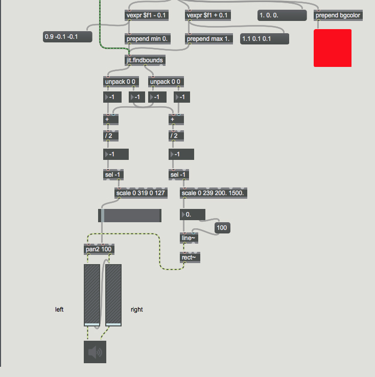
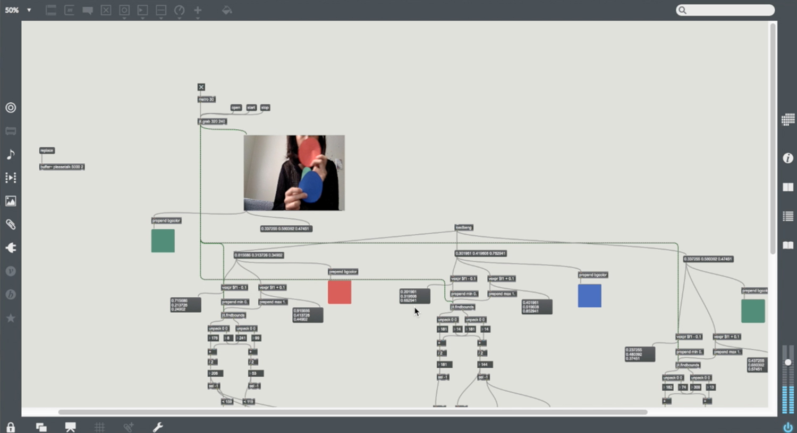
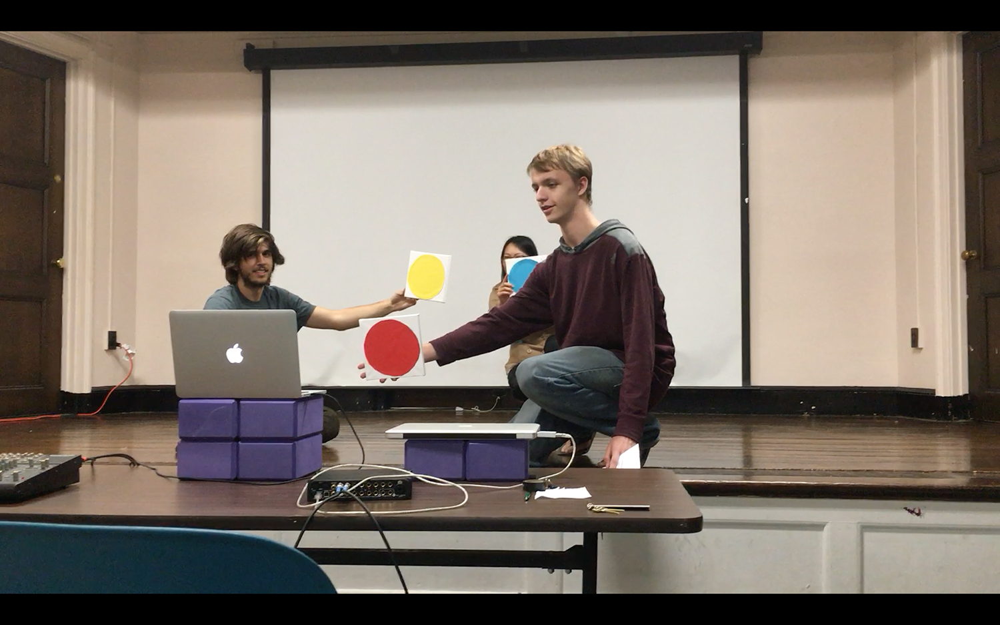
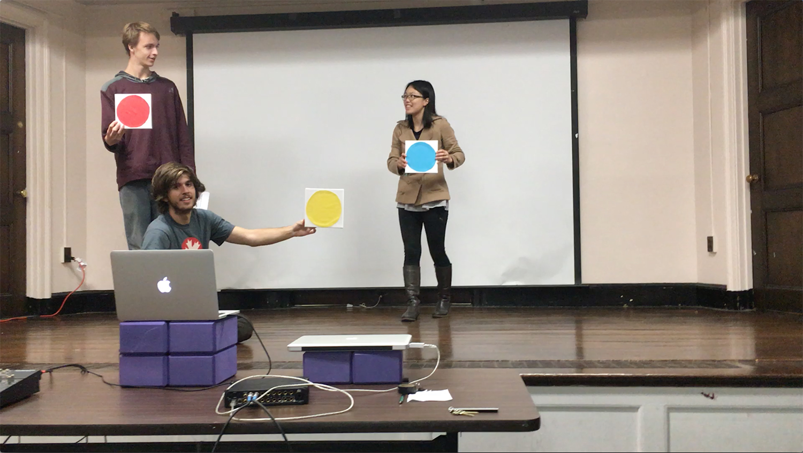

An interactive sound installation exploring the concept of being lost and un-lost. Participants interact with the piece and create different sounds as they are trying to solve the puzzle of the sound they are making.
☻ ☻ ☻
I took an online course for MAX as my elective. MAX is a visual programming environment for working with sound and I wanted to use it for my projects. MAX allowed me to use numbers to generate sound, make drum tracks, make sound effects, and so much more.

MAX interface
I was asked by my professor if I wanted to participate in a show that she was curating called “New Ideas In Music and Sound”. It was a concert series featuring cutting-edge original music and sound art. I said 'yes'.
I wanted this performance to be a case study for my thesis as I was working on the concept of collaborative exploration.
Being in a band, I know how important collaboration is. I wanted to see how people would explore differently as a team.
There was only limited things I knew how to make with MAX. A few of them happened to be how to manipulate sound with numbers, and how to manipulate numbers with colors.
I built a MAX patch that tied 3 colors to 3 different elements of a song. The pitch, the speed, and the volume. Using a webcam and 3 cutouts of those colors, I was able to manipulate the different elements of the song based on the locations of the colors on the screen. The song would only play normally when those colors are in curtain spots on the screen, otherwise it's just weird noises.

Me trying out the patch
During the 'performance', I asked 2 groups of 3 participants to interact with the piece. Each member of each team was in charge of a color block. Together, they needed to move the colors around and help each other find the perfect spots where the song would play normally.


Participants interacting with the piece
None of the participants knew each other before. It was clear that they started to communicate right away. Instead of being frustrated from not being able to get the song right, it was fun for them to help each other and kept trying until they finally got all colors at the right spots.
They felt rewarded to be able to accomplish the task, but even more rewarded to accomplish it as a team.
This project inspired me to try to incorporate more music in my projects since I really enjoyed the design process when music was involved. I would love to learn more sound programs and make more interactive sound installations in the future.
Read more about this project in my thesis book [PDF Download] :)
- - - - - - - - - - - - - - - - - - - - - - -